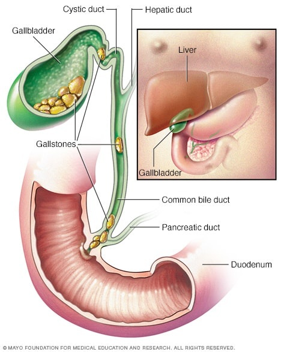

Gallstones

SYMPTOMS:
Gallstones may cause no signs or symptoms. If a gallstone lodges in a duct and causes a blockage, the resulting signs and symptoms may include:
- Sudden and rapidly intensifying pain in the upper right portion of your abdomen
-
Sudden and rapidly intensifying pain in the center of your abdomen, just below your breastbone
-
Back pain between your shoulder blades
-
Pain in your right shoulder
-
Nausea or vomiting
CAUSES
It's not clear what causes gallstones to form. Doctors think gallstones may result when:
- Your bile contains too much cholesterol. Normally, your bile contains enough chemicals to dissolve the cholesterol excreted by your liver. But if your liver excretes more cholesterol than your bile can dissolve, the excess cholesterol may form into crystals and eventually into stones.
-
Your bile contains too much bilirubin. Bilirubin is a chemical that's produced when your body breaks down red blood cells. Certain conditions cause your liver to make too much bilirubin, including liver cirrhosis, biliary tract infections and certain blood disorders. The excess bilirubin contributes to gallstone formation.
-
Your gallbladder doesn't empty correctly. If your gallbladder doesn't empty completely or often enough, bile may become very concentrated, contributing to the formation of gallstones.
DIAGNOSIS:
Tests and procedures used to diagnose gallstones and complications of gallstones include:
- Abdominal ultrasound. This test is the one most commonly used to look for signs of gallstones. Abdominal ultrasound involves moving a device (transducer) back and forth across your stomach area. The transducer sends signals to a computer, which creates images that show the structures in your abdomen.
-
Endoscopic ultrasound (EUS). This procedure can help identify smaller stones that may be missed on an abdominal ultrasound. During EUS your doctor passes a thin, flexible tube (endoscope) through your mouth and through your digestive tract. A small ultrasound device (transducer) in the tube produces sound waves that create a precise image of surrounding tissue.
-
Other imaging tests. Additional tests may include oral cholecystography, a hepatobiliary iminodiacetic acid (HIDA) scan, computerized tomography (CT), magnetic resonance cholangiopancreatography (MRCP) or endoscopic retrograde cholangiopancreatography (ERCP). Gallstones discovered using ERCP can be removed during the procedure.
-
Blood tests. Blood tests may reveal infection, jaundice, pancreatitis or other complications caused by gallstones.
TREATMENT
- Surgery to remove the gallbladder (cholecystectomy). Your doctor may recommend surgery to remove your gallbladder, since gallstones frequently recur. Once your gallbladder is removed, bile flows directly from your liver into your small intestine, rather than being stored in your gallbladder.
-
You don't need your gallbladder to live, and gallbladder removal doesn't affect your ability to digest food, but it can cause diarrhea, which is usually temporary.
-
Medications to dissolve gallstones. Medications you take by mouth may help dissolve gallstones. But it may take months or years of treatment to dissolve your gallstones in this way, and gallstones will likely form again if treatment is stopped.
-
Sometimes medications don't work. Medications for gallstones aren't commonly used and are reserved for people who can't undergo surgery.